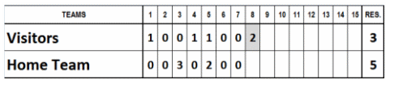
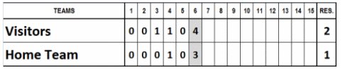
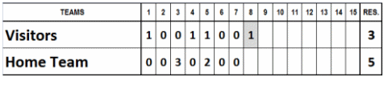
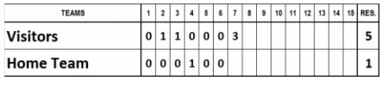

La règle 7.02(a) des OBR énumère certaines des raisons possibles pour lesquelles un match peut être suspendu :
Une rencontre est considérée comme suspendue et doit donc être poursuivie à une date ultérieure si elle est ajournée pour l’une des raisons suivantes :
Un couvre feu imposé par la loi;
Une limite de temps autorisée par les règlements de la Fédération ;
Une panne d’éclairage, un mauvais fonctionnement, ou une erreur non intentionnelle en manœuvrant un appareil mécanique, un dispositif de terrain, ou un équipement dont le fonctionnement est assuré par l’équipe locale (ex : un toit rétractable, une bâche automatique ou les appareils servant à l’arrosage et au drainage du terrain) ;
L’obscurité parce que, à cause d’une loi quelconque, on ne peut se servir de l’éclairage ;
Les conditions météorologiques, si la rencontre est interrompue lorsqu’une manche est en cours et avant qu’elle ne soit complétée, et que l’équipe visiteuse a marqué un ou plusieurs points pour prendre l’avantage et que l’équipe recevante n’a pas repris l’avantage ; ou
Une rencontre réglementaire est interrompue alors que les deux équipes sont à égalité.
Le match est considéré comme un match réglementaire dans les cas 1) et 2) et s'il est interrompu en raison des conditions météorologiques, dès lors que sont réunies les conditions énoncées à la règle 7.01(c) du règlement officiel du baseball (OBR) :
Une rencontre interrompue est réglementaire :
Si cinq manches ont été terminées;
Si l’équipe recevante compte plus de points en quatre demi-manches ou en quatre demi-manches et une fraction de demi-manche que l’équipe visiteuse en cinq demi-manches complètes ;
Si l’équipe recevante marque un ou plusieurs points dans sa moitié de cinquième manche pour égaliser le compte.
Si une partie est suspendue dans les circonstances décrites aux points 3 et 4 de la règle 7.02, la règle 7.02(c) stipule que la partie doit être reprise au point exact où la rencontre originale a été suspendue.
La suite d’une rencontre suspendue est la continuation de la rencontre originale. Les joueurs présents sur les bancs de touche et les compositions des deux équipes doivent être exactement identiques à ceux en vigueur au moment de l'interruption du match, et ils sont soumis aux règles régissant les remplacements. Tout joueur peut être remplacé par un joueur n'ayant pas pris part au match avant son interruption.
Aucun joueur remplacé avant l'interruption du match ne peut y prendre part à nouveau.
Par ailleurs, la note relative à la règle 7.02(a) dit : Les conditions météorologiques ou similaires, telles que décrites dans les règles 7.02(a)(1) à 7.02(a)(5), prévalent lorsqu'il s'agit de déterminer si une rencontre interrompue doit être considérée comme suspendue. Si une rencontre est interrompue par les conditions météorologiques et que, par la suite, une panne électrique ou un couvre-feu ou une durée limite ou une heure limite empêche sa reprise, la rencontre ne sera pas une rencontre suspendue. Si une rencontre est interrompue par une panne électrique et que les conditions météorologiques ou les conditions du terrain empêche sa reprise, la rencontre ne sera pas une rencontre suspendue. Une rencontre ne peut être considérée comme suspendue que pour une des six raisons décrites à la règle 7.02(a)
Exemple 1: Le match est interrompu au cours de la seconde moitié de la huitième manche, alors que le score est celui indiqué ci-dessous. Conformément au règlement du tournoi de la division baseball de la WBSC, la rencontre est considérée comme terminée et le score final retenu est celui enregistré à l'issue de la septième manche. Le résultat final est donc de 5 à 3 en faveur de l'équipe locale.

Exemple 2: Le match est arrêté au cours de la seconde moitié de la sixième manche, sur le score indiqué ci-dessous. Conformément au règlement du tournoi de la division baseball de la WBSC, la rencontre est considérée comme un match officiel, le score retenu étant celui enregistré à la fin de la cinquième manche. Le résultat final est donc de 2 à 1 en faveur de l'équipe locale.
Exemple 3: Le match est arrêté au cours de la seconde moitié de la sixième manche, alors que le score est celui indiqué ci-dessous. Conformément aux dispositions du règlement du tournoi de la division baseball de la WBSC, le résultat final est de 2 à 1 en faveur de l'équipe visiteuse.

Exemple 4: Le match est arrêté à la fin de la première moitié de la huitième manche, sur le score indiqué ci-dessous. Conformément au règlement du tournoi de la division baseball de la WBSC, l'équipe recevante remporte la rencontre sur le score de 5 à 3.

Exemple 5: Le match est arrêté à la fin de la première moitié de la septième manche en raison de l'obscurité. Conformément au règlement du tournoi de la division baseball de la WBSC, la rencontre sera menée à son terme à une date restant à déterminer et reprendra exactement au point où elle avait été interrompue.

Exemple 6: Le match est arrêté au cours de la seconde moitié de la sixième manche, alors que le score est celui indiqué ci-dessous. Le résultat final est de 3 partout. La rencontre est considérée comme un match nul réglementaire et ne sera rejouée que si cela s'avère nécessaire pour le classement final.
Il convient de noter que, lorsque le score n'est pas pris en compte, aucune performance individuelle enregistrée au cours de la manche incomplète (que ce soit en attaque ou en défense) n'est comptabilisée à des fins statistiques.